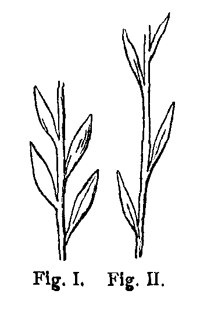

So kann ich denn endlich den Morgen wieder in deiner Nähe begrüssen. Wie schön die Sonne ist! recht so freundlich und fröhlich wie mein Geist in deiner Liebe. Ich kann dir nichts sagen, ich kann dir nicht dancken. Sehnsuchtsvoll erwart' ich die Stunde die mich wieder zu dir bringt. Schicke mir mein Angebinde. Lebe tausendmal wohl.
4. Jan. 83.
G.
Eben erhalte ich dein liebes Zettelgen. Nochmals tausend Danck. Adieu.
Ich bitte meine Geliebte mir die Schlüssel zu schicken, und sage ihr den freundlichsten guten Morgen. Vor Tische will ich ein wenig spazieren lauffen und dich besuchen und von dir hören was heute werden wird. Lebe wohl du beste, du Innbegriff meines Glücks.
5. Jan. 83.
Schicke mir doch beste Seele die Briefe aus der Schweitz ich habe sie dem Fürsten von Dessau versprochen. Du sollst sie ohnversehrt wieder haben. Und sage mir ein freundlich Wort zum unfreundlichen Tage. Ich mag heute abend keinen Thee sondern will bey dir seyn. Eh ich auf die Cammer gehe, komme ich einen Augenblick.
6. Jan. 83.
G.
Eben vernehme ich daß es Feyertag ist, und daß also keine Session ist. bin ich doch im Christl. Kalender schlecht bewandert. Hier schick ich die erste Abschrifft der Reisen und komme nach Tische dahin wo mein Herz immer ist.
6. Jan. 83.
G.
Es war mir unmöglich heute wegzugehn, da du nicht wohl bist. Ich brauche Bewegung und will spazieren lauffen und dann bey dir seyn. Sage mir ein Wort wie du dich befindest. Gestern Abend habe ich tausendfach an dich gedacht.
13. Jan. 83.
G.
Hier noch den versprochnen guten Morgen. Wenn es nicht weiter geht und mir die liebe Hoffnung bleibt dich den nächsten Tag wieder zu sehen ist alles gut.
Lebe wohl, beste! einzige, und bleibe deinem bleibenden.
14. Jan. 83.
G.
Ich mögte erfahren wie meine Beste geschlafen hat und ob sie mir recht freundl. erwacht ist. Nach Mittage komm ich zu dir gegen Abend will ich zur H[erzogin] Mutter, und dich in der Gesellschafft wieder finden. Adieu Geliebteste.
d. 16. Jan. 83.
G.
Bald will ich kommen und meiner Liebsten zurechte helfen. Leider bin ich zur H[erzoginn] Mutter zur Tafel gebeten und verliere die schönste Zeit des Nachmittags. Abends hast du die Affen, ich habe schon lange aufgehört ihr Großmeister zu seyn, und werde wohl in die Einsamkeit gehen.
d. 19. Jan. 83.
G.
Es ist mir nothwendig ein Wort von dir zu hören. Gehst du in die Zeichenstunde, und kannst du deinen rauhen Lehrer lieben. Ich habe viel zu thun. Sage mir ob du in's Conzert gehst.
d. 22. Jan. 83.
G.
Ich habe lange im Bette gelegen, es ist mir nicht ganz recht. Desto mehr freue ich mich dich bey mir zu sehen. Die Kleine Schwägerinn will um drey Uhr kommen schreibe mir ob du sie abhohlen oder durch meine Hinterthüre gehn willst. Es ist nur soviel Schnee im Garten. Lebe wohl du meine sehnlichst erwartete. Adieu indess.
23. Jan. 83.
G.
Ich wünschte daß die Männer nach der Gesellschafft zu uns kämen ich wollte ein klein Abendessen veranstalten.
Schicke mir l. L. den grosen Pinsel und sage mir ein liebes Wort. Ich bin recht wohl und mögte mit dir ausfahren schreibe mir ob und wann es angeht. Dein Bild ist in meiner Stube geblieben es wandelt um mich herum wenn ich sitze und arbeite. Lebe wohl ich sehe dich bald und bin heute bey und mit dir.
25. Jan. 83.
G.
Es fehlte mir zum schönen Morgen nur ein Wort von dir. Nach eilfen will ich kommen, und mich mit dir des schönen Wetters freuen. Ich bin am Zeichnen, und hoffe ein recht schönes Rähmgen und eine recht liebe Geliebte zu finden.
26. Jan. 83.
G.
Es wird Abend, ich will und muß zu Hause bleiben, so sauer es mir wird wenn mein Stündlein vorhanden ist, und ich über die Zeit fasten soll. Laß mir ein Paar liebe Buchstaben deiner Hand, ein Monogramm oder eine Hieroglyphe sehn, und stärcke mich noch auf die drey Stunden hinaus die ich von dir entfernt bleibe. Lebe wohl. Ich mache mich heute von vielem los.
27. Jan. 83.
G.
Liebe Lotte ich habe heut noch nicht zur Feder kommen können dir ein freundlich Wort zu sagen. Schicke mir doch Iphigenien und schreibe mir wie du lebst, und ob du heute Abend zur Herzoginn gehst ich bin um 7 Uhr bestellt. Ich sehe dich nach vieren.
30. Jan. 83.
G.
Ich bin meine liebste so von Arbeiten gesotten und gebraten daß ich dich heute früh nicht sehn werde auch wohl diesen Nachmittag zu Hause bleiben muß. Diesen Abend geh ich nicht auf die Redoute. Bleibst du auch zu Hause; so bin ich bey dir.
31. Jan. 83.
G.
Wenn meine Lotte nach Hause kommt muß sie noch ein Wort von mir finden. Ich bin nicht ausgegangen, sondern habe mich in alten Ackten und Büchern umgesehen und manches menschliche in einem Wuste von Formalität gefunden lebe wohl in dem kritischen Augenblicke wo uns Freude oder Sorge bevorsteht. Gute Nacht liebste.
1. Febr. 83.
Reise-Tagebuch
erstes Stück.
von Carlsbad auf den Brenner in Tyrol.
1786
Stationen von Carlsbad bis auf den Brenner in Tyrol,
zurückgelegt vom 3. Sept. bis den 8ten. 1786
d. 3 Sept früh 3 Uhr stahl ich mich aus dem Carlsbad weg, man hätte mich sonst nicht fortgelassen. Man merckte wohl daß ich fort wollte; die Gräfin L[anthieri] setzte auch einen entsetzlichen Trumpf drauf; ich lies mich aber nicht hindern, denn es war Zeit. Ich wollte schon den 28ten. Das ging aber nicht, weil an meinen Sachen noch viel zu thun war.
Um halb 8 in Zwota schöner stiller Nebelmorgen. No. 1.
um 12. in Eger bey heisem Sonnenschein. Der Morgen war bedeckt gewesen, die oberen Wolcken streifig und wollig, die unteren schwer; es hielt sich das Wetter bey SüdWestWind. Gedancken darüber. Das Wetter gab schon den 2ten gute Anzeichen. Siehe das weitere in der Note a fol. [19].
Ich fand daß Eger dieselbe Polhöhe wie Franckfurt hat und freute mich einmal wieder nahe am 50. Grade zu Mittag zu essen. Von Karlsbad bis Zwota der quarzhaffte Sandstein; der Weg nach Maria Culm geht auf einem aufgeschwemmten Gebirg hin. Bis Eger Plaine und Feldbau.
In Bayern stößt einem gleich das Stifft Waldsassen entgegen, ein köstlich Besitzthum derer die früher als andre klug waren. Es liegt in einer fruchtbaren Teller- |: um nicht zu sagen Kessel :| Vertiefung, in einem schönen Wiesengrunde, rings von fruchtbaren sanften Anhöhen umgeben und hat im Lande weit Besitzungen. Der Boden ist aufgelöster Thonschiefer, den der Quarz, der sich im Thonschiefer befand und nicht aufgelöst ist, locker macht. Es liegt zwar noch hoch aber anmutig und die Felder sind fruchtbar.
Bis gegen Tischenreuth steigt das Land noch, die Wasser fließen einem entgegen, nach der Eger und Elbe zu; von Tischenreut an fällt nun das Land südwärts ab und die Wasser lauffen nach der Donau.
Tischengreut um fünfe. Treffliche Chaussee von Granitsand, es läßt sich keine vollkommnere dencken. Die Gegend durch die sie geht desto schlechter, auch Granitsand, flach liegend, moorig pp. Da nunmehr gute Chaussee ist und das Land abfällt, kommt man mit unglaublicher Schnelle fort, die gegen den böhmischen Schneckengang recht absticht. Ich war halb neun in Weyda, Nachts 1. Uhr in Wernberg, halb dreye Schwarzenfeld, halb fünfe Schwandorf, halb achte Bahnholtz, um zehen in Regenspurg und hatte also diese 12 ¼ Posten oder 24 ½ Meile in 31 Stunden zurückgelegt.
Von Schwandorf gegen Regenstauff zu, da es anfing Tag zu werden, bemerckte ich die Veränderung des Ackerbodens ins bessere. Den Regenfluß herauf, hatte, in uralten Zeiten, Ebbe und Fluth aus der Donau gewürckt und so diese natürlichen Polder gebildet, die wir nun benutzen. Es ist dieses in der Nachbarschafft aller grosen Flüsse bemercklich. Ich glaube ich habe dir schon davon gesprochen. Regenspurg liegt gar schön, die Gegend mußte eine Stadt hierher locken. Auch haben sich die Geistlichen Herrn wohl possessionirt; alles Feld um die Stadt gehört ihnen, und in der Stadt steht Kirche gegen Kirche und Stifft gegen Stifft über.
Die Donau hat mich an den alten Mayn erinnert. Bey Frankfurt präsentirt sich Fluß und Brücke besser, hier sieht aber das gegenüberliegende Stadt am Hof recht artig aus.
Die Jesuiten Schüler gaben heut, ihr jährliches Schauspiel, ich besuchte es gleich, sah den Anfang des Trauerspiels und das Ende der Oper. Sie machten es nicht schlimmer als eine angehende Liebhaber Truppe. Und waren recht schön, fast zu prächtig gekleidet. Auch dies und das Ganze, wovon einmal mündlich, hat mich von der Jesuiten groser Klugheit auf's neue überzeugt; und es ist nicht Klugheit, wie man sie sich in Abstracto denckt, sondern es ist eine Freude an der Sache dabey, ein Mit und Selbstgenuß, wie er aus dem Gebrauch des Lebens entspringt. Wie freut michs daß ich nun ganz in den Catholicismus hineinrücke, und ihn in seinem Umfange kennen lerne.
Wärest du nur mit mir, ich wäre den ganzen Tag gesprächich, denn die schnelle Abwechslung der Gegenstände giebt zu hundert Beobachtungen Anlaß. Offt wünsch ich mir Fritzen und bin und bleibe allein.
Wie glücklich mich meine Art die Welt anzusehn macht ist unsäglich, und was ich täglich lerne! und wie doch mir fast keine Existenz ein Räthsel ist. Es spricht eben alles zu mir und zeigt sich mir an. Und da ich ohne Diener bin, bin ich mit der ganzen Welt Freund. Jeder Bettler weist mich zu rechte und ich rede mit den Leuten die mir begegnen, als wenn wir uns lange kennten. Es ist mir eine rechte Lust.
Heute schreib ich dir accurat unterm 49ten Grade und er laßt sich gut an, der Morgen war kühl und man klagt auch hier über Nässe und Kälte, aber es war ein herrlicher gelinder Tag, und die Luft die ein groser Fluß mitbringt ist ganz was anders.
Das Obst ist nicht sonderlich, doch leb ich der Hoffnung es wird nun kommen und werden. Auch habe ich einem alten Weibe, das mir am Wasser begegnete, für einen Kr Birn abgekauft und habe solche wie ein andrer Schüler publice verzehrt. Nun gebe Gott bald Trauben und Feigen. Ein Grundriß von Regensb. und das Iesuitenspiel sollen hier beyliegen.
NB. Jesuitenkirchen, Türme, Dekoration überhaupt! Etwas groses in der Anlage, das allen Menschen insgeheim Ehrfurcht einflöst. Gold, Silber, Metall und Pracht, daß der Reichthum die Bettler aller Stände blenden möge, und hie und da etwas abgeschmacktes, daß die Menschheit versöhnt und angezogen werde. Es ist dies überhaupt der Genius des Catholischen äussern Gottesdiensts, noch hab ich's aber nicht mit soviel Verstand, Geschick und Geschmack und soviel Consequenz ausgeführt gesehn, als bey den Jesuiten und alle ihre Kirchen haben eine Übereinstimmung. In der Folge mehr. Wie sie nicht die alte, abgestümpfte Andacht der andern Ordensgeistlichen fortgesetzt haben sondern mit dem Genio Säkuli fortgegangen sind.
Regensburg d. 5. Sept.
Vom Carlsb. hatte ich nur einen Mantelsack und Dachsranzen mitgenommen, und für meine Garderobe wäre es überflüssig, da ich aber soviel Bücher und Papiere mit habe, so war es zu beschweerlich. Nun Hab ich mir ein Coffregen gekauft das mich recht freut. Auch ists recht gut daß ich allein bin, denn gewiß man wird durch anhaltende Bedienung vor der Zeit alt und unfähig. Jetzt freut mich alles mehr, und ich fang in allem gleichsam wieder von vorne an.
Gewiß ich hoffe auf dieser Reise ein Paar Hauptfehler, die mir ankleben, loszuwerden.
An der Donau gezeichnet. No. 2.
um halb zwölfe.
Ich muß nun machen daß ich wegkomme! Ein Ladenbedienter, aus der Montagischen Buchhandlung, hat mich erkannt, der in der Hofmannischen ehmals stand. So muß dem Autor nichts guts von den Buchhändlern kommen. Ich hab es ihm aber grade ins Gesicht, mit der größten Gelassenheit, geläugnet daß ich's sey.
Den Pastor Schäfer hab ich gesehen und sein Cabinet, unter dem angenommenen Nahmen Möller, den ich auch behalten werde. Nun leb wohl ich setze mich auf nach München.
Ein sonderbar Gestein wird hier verarbeitet, zu Werckstücken, eine Art Todtliegendes, doch von dem, was ich für älter und ursprünglich erkenne. Es ist grünlich, mit Quarz gemischt, löchrich und finden sich grose Stücke des festesten Jaspis drin, in welchem wieder kleine runde Flecken von Todtliegendem sich befinden. Ein Stück war gar zu apetitlich, der Stein aber zu fest, und ich habe geschworen mich nicht auf dieser Reise mit Steinen zu schleppen.
d. 5ten halb 1. Mittag von Regensburg.
Schöne Gegend bey Aburg wo die Donau sich an Kalckfelsen bricht, bis gegen Saale.
Es ist der Kalck wie der bey Osterode am Harz. Dicht aber im Ganzen Löchrich.
3 Uhr in Saale No. 2b. halb 4 von Saale, um sechs in Neustadt, Geisenfeld um achte, Pfaffenhofen um 10 Uhr, d. 6. Sept. Unterbrück um 2. München um 6 in der frühe.
Abends um sechse. nun ist mein Münchner Pensum auch absolvirt, diese Nacht will ich hier schlafen und Morgen früh weiter. Du siehst ich richte mich eilig ein, und will und muß nun einmal diese Manier versuchen, um von der alten hockenden und schleichenden ganz abzukommen.
Ich habe die Bildergallerie gesehn und mein Auge wieder an Gemälde gewöhnt. Es sind treffliche Sachen da. Die Scizzen von Rubens zu der Luxenburger Gallerie sind herrlich. Das vornehme Spielwerck, die Colonna trajana im Modell, die Figuren verguldet Silber auf Lapis lazuli, |: ich glaube Archenholz spricht davon :| steht auch da. Es ist immer ein schön Stück Arbeit.
Im Antiquario, oder AntikenCabinet, hab ich recht gesehen daß meine Augen auf diese Gegenstände nicht geübt sind, und ich wollte auch nicht verweilen und Zeit verderben. Vieles will mir gar nicht ein.
Ein Drusus hat mich frappirt, die zwey Antoninen gefielen mir und so noch einiges. Sie stehen auch unglücklich, ob man gleich recht mit ihnen aufputzen wollen, und als Ganzes der Saal, oder vielmehr das Gewölbe, ein gutes Ansehn hätte, wenn es nur reinlicher und besser unterhalten wäre.
Im Naturalienkabinet fand ich schöne Sachen aus Tyrol, die ich aber durch Knebeln schon kannte. Apropos von Knebeln! Ihm gefiel im Antikensaal ein Julius Cäsar so wohl, der, |: ich müßte mich entsetzlich betrügen :| gar nichts taugt, allein ich finde eine frappante Ähnlichkeit der Büste mit Knebeln selbst. Die Übereinstimmung des Charackters hat also den Mangel der Kunst ersetzt.
Ich wohne auch hier in Knebels Wirthshaus, mag aber nicht nach ihm fragen, aus Furcht Verdacht zu erwecken oder dem Verdacht fortzuhelfen. Niemand hat mich erkannt und ich freue mich so unter ihnen herum zu gehen. Bey Kobeln war ich, fand ihn aber nicht zu Hause. Sonst hatt ich den Spas einige die ich dem Nahmen nach kannte, und ihr Betragen zu sehen.
Überhaupt da ich nun weis wie es allen Ständen zu Muthe ist und niemand seinen Stand verbergen kann und will; so hab ich schon, das phisiognomische abgerechnet, einen grosen Vorsprung, und es ist unglaublich wie sich alles auszeichnet.
Herder hat wohl recht zu sagen: daß ich ein groses Kind bin und bleibe, und ietzt ist mir es so wohl daß ich ohngeftraft meinem kindischen Wesen folgen kann.
Morgen geht es grad nach Inspruck! Ich lasse Salzburg, wovon ich dir sogerne erzählt hätte, um den reisenden Franzosen auszustechen, das Zillerthal mit seinen Turmalinen, die Bergwercke von Schwaz, die Salinen von Halle! Was lass ich nicht alles liegen? um den Einen Gedancken auszuführen, der fast schon zu alt in meiner Seele geworden ist.
Heute früh fand ich eine Frau die Feigen verkaufte auf einer Gallerte des Schlosses, sogleich wurden ihrer gekauft und obgleich theuer, drey Kreutzer das Stück, doch die ersten, denen wills Gott mehr folgen sollen. Das Obst ist doch auch für d. 48ten Grad nicht übermäsig gut. Man klagt wie überall über Kälte und Nässe. Ein Nebel, der für einen Regen gelten konnte, empfing mich heute früh vor München, den ganzen Tag blies der Wind sehr kalt vom Tyroler Gebirg, der Himmel war bedeckt. Ich stieg auf den Turm von dem sich die Fräulein herabstürzte und sah mich nach den Tyroler Bergen um. Sie waren bedeckt und der ganze Himmel überzogen. Nun scheint die Sonne im Untergehn noch an den alten Turm der mir vor dem Fenster steht. Lebe wohl. Du bist mir immer gegenwärtig und offt regt sich der Wunsch wieder: mögt ich doch Fritzen mitgenommen haben.
Noch eine böse Arbeit steht mir bevor. Nach einer letzten Conferenz mit Herdern, mußt ich die Iphigenie mitnehmen und muß sie nun gelegentlich durchgehn und ihr wenigstens einige Tage widmen. Das will ich auch thun, sobald ich ein Plätzgen finde wo ich bleiben mag.
d. 7. Sept Abends. Es scheint mein Schutzgeist sagt Amen zu meinem Credo, und ich danck ihm, nicht daß er mir diesen schönen Tag gemacht, sondern daß er mich an diesem Tage hierhergeführt hat. Der Postillon sagte noch zuletzt es sey der erste diesen ganzen Sommer. Ich hab eine herzliche, stille danckbare Freude über mein Glück und hoffe es soll nun so fort gehn.
Um 5 Uhr fuhr ich von München weg. Klarer Himmel. An den Tyroler Bergen standen die Wolcken fest und die untern Streifen bewegten sich auch nicht. Der Weg geht an der Iser hin, in der Höhe auf zusammengeschlemmten Kieshügeln, die Arbeit der alten höheren Wasser. Ich sah Knebels Kiesel wieder und begrüste ihn. Die Nebel des Flusses und der Wiesen wehrten sich eine Weile, endlich wurden auch diese aufgezehrt.
Zwischen gedachten Kieshügeln |: die du dir mehrere Stunden lang und breit dencken mußt :| das schönste fruchtbare Erdreich. Siehe rückwärts fol. Vor Wohlfahrtshausen wo ich um 9 Uhr ankam und so den 48 Grad erreichte, muß man wieder an die Iser, man sieht da einen Durchschnitt, und Abhang der Kieshügel, wohl auf 150 Fus hoch. In Wohlf. brannte die Sonne starck. Alle Welt iammert über das böse Wetter und daß der grose Gott gar keine Anstalten machen will. Nun ging mir die neue Welt auf, ich näherte mich den Gebürgen, sie wurden freyer von Wolcken. BenedicktBayern liegt köstlich! Wie man es zuerst erblickt, liegts in einer fruchtbaren Plaine, ein lang und breites weises Gebäude und ein breiter hoher Felsrücken darhinter. Dann kommt man zum Cochl. See No 3. dann zum Walcher See No 4. zum Cochl. See gehts schon hinauf, der andre liegt noch höher im Gebürge. Wie ich den ersten beschneiten Gipfel sah, griff ich nach dem Hute, doch war es mir unbegreiffl. schon so nahe an den Schneebergen zu seyn. Dann hört ich daß es gestern in dieser Gegend gedonnert geblitzt geregnet und auf den Bergen geschneit hatte. Es war also der erste Schnee den ich begrüßte.
Die hohen Felsklippen sind alle Kalck, von dem ältesten der noch keine Versteinerungen enthält. Diese Kalckfelsen gehn in ungeheurer ununterbrochener Reihe von Dalmatien bis nach dem Gotthart und auch weiter fort. Haquet hat einen grosen Theil der Kette bereist davon mündlich. Sie lehnen sich an den Granit, Porphyr u. s. w. Ich habe nur wenige Stücke eine Art Gneis in den Giesbächen gefunden.
Wallensee halb 5. Ich war nicht weit von dem Orte, als mir das erste Abenteuergen aufsties. Ein Harfner ging mit seinem Töchtergen einem Mädchen von 11 Jahren vor mir her, und bat mich sie einzunehmen. Ich lies sie zu mir sitzen und nahm sie auf's nächste Dorf mit. Ein artiges ausgebildetes Geschöpf, das weit herumgekommen war, mit seiner Mutter nach Maria Einsiedeln gewallfahrtet und seine Reisen immer zu Fuß gemacht hatte. In München hatte sie vor dem Churfürsten gespielt und überhaupt schon sich vor 21 fürstl. Personen hören lassen. Sie unterhielt mich recht gut. hatte hübsche grose braune Augen eine eigensinnige Stirne, die sie ein wenig hinaufwärts zog. War hübsch und natürlich wenn sie sprach, besonders wenn sie kindisch laut lachte. Wenn sie schwieg, wollte sie was bedeuten und machte mit der Oberlippe eine fatale Mine. Ich schwätzte alles mit ihr durch. Sie war überall zu Hause, und paßte gut auf. Einmal fragte sie mich, was das für ein Baum sey? Es war ein Ahorn, und der erste den ich auf der ganzen Reise sah. den hatte sie gleich bemerckt. Es kamen nachher noch mehr. Sie zeigte mir eine neue Haube die [sie] sich hatte in München machen lassen und in einer Schachtel mit sich führte.
Es gäbe schön Wetter, wenigstens einige Tage sagte sie. Sie trügen ihr Barometer mit das sey die Harfe; wenn sich der Diskant hinauf stimme, so geb es gutes Wetter das hab er heute gethan. Ich nahm das Omen an, und hatte noch viel Spas mit ihr ehe wir schieden. Mittelwald halb 8 angekomm.
d. 8. Sept. Abends
Auf dem Brenner angelangt, gleichsam hierher gezwungen, wie ich mir nur ein Ruheort gewünscht habe. Mein erstes ist dir das Gute des vergangnen Tages mitzutheilen. Es war ein Tag an dem man Jahrelang in der Erinnerung genießen kann.
Von Mittelwald um sechs Uhr, klarer Himmel es blies ein sehr scharfer Wind und war eine Kälte wie sie nur dem Februar erlaubt ist. Die duncklen mit Fichten bewachsnen Vorgründe, die grauen Kalckfelsen, die höchsten weisen Gipfel auf dem schönen Himmelsblau, machten köstliche, ewig abwechselnde Bilder.
Bey Scharnitz kommt man ins Tyrol und die Grenze ist mit einem Walle geschlossen der das Thal verriegelt und sich an die Berge anschließt. Es sieht schön aus. An der einen Seite ist der Felsen befestigt, an der andern geht es steil in die Höhe.
In Seefeld um halb neun.
Von da wird der Weg immer interessanter. Bisher ging er über die von Benedikt Bayern herauf erstiegne Höhen weg, nun kommt man dem Innthal näher und sieht von oben hinein Intzingen liegen. Die Sonne war hoch und heis. Meine Garderobe, |: eine Veste mit Ermeln und ein Überrock, :| die auf alle vier Jahrszeiten gerichtet ist mußte gewechselt werden, und sie wird offt des Tags 10 mal gewechselt.
Bey Cirl steigt man in's Innthal herab. Die Lage ist unbeschreibl. schön und der hohe Sonnenduft machte sie ganz herrlich. Ich habe nur einige Striche aufs Papier gezogen, der Postillon hatte noch keine Messe gehört und eilte sehr auf Inspruck. es war Marien Tag.
Nun immer an der Inn hinab an der Martins Wand vorbey, einer steilabgehenden ungeheuren Kalckwand. Zum Orte wohin Kayser Max sich verstiegen haben soll, getraut ich mir wohl ohne Engel hin und her zu kommen, ob es gleich immer ein frevelhafftes Unternehmen wäre.
Innspruck liegt herrlich in einem breiten reichen Thal zwischen hohen Felsen und Gebirgen.
Ich wollte heute dableiben, aber es lies mir innerlich keine Ruhe.
Ich fand an des Wirths Sohn den leibhaften Söller. So finde ich nach und nach meine Menschen.
Es ist Mariä Geburt. Alle Menschen geputzt und gesund und wohlhäbig wallfahrtend nach Wilden das eine Viertelstunde von der Stadt liegt. Von Innsbr. fuhr ich um 2 Uhr ab und war halb achte hier
auf dem Brenner
hier soll mein Rastort seyn, hier will ich eine Recapitulation der vergangnen sechs Tage machen, Dir schreiben und dann weiter gehn.
Von Innspr. herauf wirds immer schöner, da hilft kein Beschreiben. Man kommt eine Schlucht herauf wo das Wasser nach der Inn zu stürzt. Eine Schlucht die unzählige Abwechslungen hat.
Bald ist die Seite gegenüber nicht abhängiger als daß nicht noch sollte der schönste Feldbau drauf geübt werden. Es liegen Dörfgen, Häuser, Hütten, Kirchen alles weis angestrichen zwischen Feldern und Hecken auf der abhängenden hohen Fläche.
Bald verengt sichs, es wird Wiese, steil abfallendes Thal pp.
Zu meiner Weltschöpfung hab ich manches erobert. Doch nichts ganz neues noch unerwartetes. Auch hab ich viel geträumt von dem Model, von dem ich solang rede und an dem ich Euch lieben Layen allein das alles anschaulich machen könnte was immer mit mir herumreist.
Endlich ward es dunckel und dunckler, das Detail verlohr sich und die Massen wurden größer und herrlicher. Endlich da alles nur wie ein tiefes geheimnißvolles Bild vor mir sich bewegte, sah ich auf einmal die hohen Gipfel wieder vom Monde erleuchtet und die Sterne herabblincken.
In Inspr. und der Gegend mögt ich mit dir einen Monat verleben, mit solchem Wetter wie heute versteht sich. Und das Gebürg herauf was ich für Gegenstände vorbeygefahren bin, die dir die größte Freude machen würden, wenn du sie zeichnen könntest. Einige schick ich dir.
Nun bin ich hier, finde ein sehr saubres bequemes Gasthaus; Will ausruhen meine Vergangne Tage überlegen und alles für dich in Ordnung bringen, auch mich zu weiterer Reise zubereiten.
Von Witterung Not. a. Von Polhöhe pp S. Note b. Von Pflanzen N. c. Von Gebürgen Steinarten Note d. Von Menschen Note e.
9. Sept. 86 Abends.
Da ich meine flüchtige Bemerckungen dieser Tage zusammenbringe, schreibe und hefte; so findet sich's daß sie beynahe ein Buch werden, ich widme es dir. So wenig es ist wird es dich erfreuen und wird mir in der Folge Gelegenheit geben besser ordentlicher und ausführlicher zu erzählen. Wir werden nun gerne etwas von diesen Gegenden lesen, weil ich sie gesehn, manches über sie gedacht habe und du sie durch mich genießen sollst. Ich werde so fortfahren von Zeit zu Zeit einen Rasttag zu machen und das Vergangne in Ordnung zu bringen denn in die Weite gehts nicht und man mag zuletzt die einzelnen Blätter nicht mehr ansehn.
Hier oben in einem wohlgebauten, reinlichen, bequemen Hause seh ich nun noch einmal nach dir zurück. Von hier fliesen die Wasser nach Deutschland und nach Welschland diesen hoff ich morgen zu folgen. Wie sonderbar daß ich schon zweymal auf so einem Punckte stand, ausruhte und nicht hinüber kam! Auch glaub ich es nicht eher als bis ich drunten bin. Was andern Menschen gemein und leicht ist, wird mir sauer gemacht. Lebe wohl! Gedenck an mich in dieser wichtigen Epoche meines Lebens. Ich bin wohl, freyen Gemüths und aus diesen Blättern wirst du sehn wie ich der Welt genieße. Lebwohl. Der ganze Tag ist mir über diesen Papieren hingegangen.
Note a.
Gedancken über die Witterung.
Sobald ich die Schäfgen der Oberen Lufft sah (schon im Carlsbad d. 2 Sept.) hatte ich gute Hoffnung, ich schloß daraus: daß die Atmosphäre ihre Elasticität wieder gewinne und im Begriff sey das schöne Wetter wieder herzustellen. Allein ich dachte nicht an das was ich nachher bemerckt zu haben glaube. Nämlich: Daß eine Elastischere Athmosphäre die Wolcken aufzehrt, ihnen den Zusammenhang unter sich benimmt, so daß also die Dunste die vorher Massenweis zusammen gedrängt waren, als Wolcken umherzogen, nur in einer gewissen Höhe über der Erde schwebten, als Regen herab fielen, als Nebel wieder aufstiegen, nunmehr in den ganzen Raum gleichförmig ausgetheilt sind. Da ieder Dunst und Wassertropfen durch Mittheilung der Athmosphärischen Elasticität unendlich elastisch werden, ia ins unendlich kleine getheilt werden kann; so kann auch die Wasser Masse sich in eine weit grösere Höhe austheilen und vor unsern Augen so verschwinden daß sie zuletzt auch nicht den geringsten Dunst bemerckbar läßt. Vielleicht ist das was ich sage was bekanntes, ich setze nur meine Bemerckungen hin, und folgere aus meiner Hypothese.
Wenn eine ungeheure Menge condensirte Dünste aufzulösen sind, wie es diesmal war; so geht es langsam zu, und die obere Lufft, da sie zuerst ihre Elasticität wieder erlangt, fängt zuerst an Schäfgen |: leicht wie gekämmte Wolle aneinander gereihte Wölckgen :| zu bilden. An den hohen Gebürgen, die durch die Anziehung die Wolcken halten, fangen diese an, in Grosen, Bergähnlichen über einander gethürmten weißen Massen festzustehn, indess die Wolcken der untern Athmosphäre als graue Streifen, und in langgedehnten schweeren Formen unter ihnen hinziehen. Vermehrt sich nun immer die Elasticität der Luft so zehrt sie von oben herein die um die Berge feststehende Wolcken auf und der Wind der vom Berge kommt der vor wenigen Tagen Regen brachte bringt nun gutes Wetter.
Ich sah das Aufzehren einer solchen Wolcke ganz deutlich sie hing am Berge fest, löste sich mit der grösten Langsamkeit auf, kaum daß einige Flocken sichtbar sich ablösten und in die Höhe stiegen die aber auch gleich verschwanden. Und so verschwand sie nach und nach und hinter dem Berge bemerckt ich in der Lufft ganz leichte weiße Streiffgen, die mir zuletzt auch aus dem Gesicht kamen.
Ist nun das Wasser so in der ganzen Athmosphäre vertheilt, und noch einigermaßen nah an einander, so sieht mans an der Luft-Perspecktiv und am Auseinandergehn der Landschafftsgründe ganz deutlich. Das muß nun als Thau, oder Reif herunter, oder muß sich weiter ausdehnen und verbreiten. Diesmal machte das Wetter um die Tyroler Berge ein gewaltsames Ende mit Donnern, Blitzen und Schneyen; dann hellte sichs aus.
Eben so sah ich den 9ten als die Sonne den Schnee auf den Gipfeln zu schmelzen anfing leichte Schaumstreifen in die Höhe steigen und sich bey einem kalten Mittag Winde weit über den Himmel gegen Norden verbreiten. So ging es immer fort es zog immer mehr weißer Duft von Mittag herauf der ganze Himmel ward bedeckt, und die Sonne endlich verdunckelt, die Dünste verwandelten sich in Wolcken, die noch in ziemlicher Höhe schwebten und die Bewohner jammerten daß schon wieder Regen folge.
Nach meiner Theorie fahre ich fort zu erklären. Die Athmosphäre war nun in dieser Gegend fast mit Dünsten gesättigt, sie konnte sie also nicht mehr rein aufzehren, sie mußte also leiden daß die Dünste wieder ein zusammenhangender Dunst und endlich noch verwandter unter sich und Wolcken wurden. Kann nun diese Nacht durch da die Kühlung die Elasticität des Wassers vermindert und die Elasticität der Luft vermehrt, letztere über ersteres Herr werden, so müssen die Wolcken wieder von den Bergen angezogen werden und auch als Wasser niederfallen.
Noch eine Bemerckung. Die Athmosphäre und die Berge ziehen wechselsweise die Dünste an, unter welchen Bestimmungen dies geschieht wird sich erklären lassen. Jetzt nur soviel: Wenn sich die Elasticität der Luft vermehrt, vermehrt sich ihre Anziehungskrafft und die Wolcken verlassen die Berge und werden, wie mehrmals gesagt, von der Luft gehoben und verzehrt, umgekehrt ist die Würckung umgekehrt. Es ist wie mit einem Luftballon der sich auch wieder hebt wenn die Luft elastischer wird.
Ich habe das Wort Elasticität, statt des in dieser Materie auch gewöhnlichen Wortes Schwere gebraucht, und es ist auch besser. Überhaupt aber sind meine Kunstwörter nicht die besten, komme ich zurück; so wollen wir meine Bemerckungen und Erfahrungen mit den Grundsätzen der Phisicker, ihren Theorien und Erfahrungen zusammen halten. Ich bin leider nicht gelehrt wie du weißt.
Note b.
Über Polhöhe, Clima pp.
Ich habe den ganzen Weg mit mir selbst über Polhöhe, Clima und was daran hängt gescherzt, nun darüber auch ein Paar Worte.
Die Polhöhe machts nicht aus, sondern die Bergrücken die von Morgen nach Abend die Länder durchschneiden; diese machen sogleich grose Veränderungen und die Länder die alsdann nordwärts liegen haben davon zu leiden. Die Wittrung dieses Jahr für den ganzen Norden scheint durch die grose Alpenkette auf der ich dieses schreibe, bestimmt worden zu seyn. Hier haben sie den ganzen Sommer Regen gehabt und Südwest und Südost haben von hier den Regen in den ganzen Norden verbreitet. In Italien sollen sie schön Wetter fast zu trocken gehabt haben.
Note c.
Über Pflanzen, Früchte pp.
Was ich bisher an Früchten angetroffen habe will nichts sagen. Aepfel und Birn hängen schon vor Inspruck im Innthal, Pfirschen Trauben bringen sie aus Wälschland oder eigentlich dem mittägigen Tyrol. Um Inspr. bauen sie Türckisch Korn sehr viel es war eben im ansetzen.
Auch noch ein Gewächs das sie Blende |: Haidekorn an andern Orten :| nennen, das ein bräunlich Korn trägt, woraus Mehl gemacht und als Muß oder Knötel gegessen wird.
Hinter Inspr. sah ich die ersten Lerchenbäume die hieroben häufig wachsen, und bey Schemberg den ersten Zirbel. Die Pflanzen betr. fühl ich noch sehr meine Schülerschafft.
Bis München sah ich nur die gewöhnlichen, das Hieracium, die blaue Blume die sie bey uns wilden Sellery nennen, die Schaafgarbe, Disteln, was ich von Carlsb beständig sah. Vor München an einem Wassergraben die Federnelcke, eine art niedriger Sonnenblume. Hinter Benedicktbayern das Gebürg herauf und am Walchsee andre die ich eingelegt habe und die erste Gentiana; immer war es das Wasser in dessen Nähe ich die neuen Pflanzen zuerst fand.
Überhaupt über den Einfl. der Barometrischen Höhe auf die Pflanzen will ich eine Meynung hersetzen die geprüft werden muß.
Die mehr elastische Lufft würckt auf die Organe der Pflanze und giebt ihr auch alle mögliche Ausdehnung und macht ihre Existenz vollkommner. Ist Feuchtigkeit genug da die in das ausgedehnte Organ eindringen kann; so nährt sich die Pflanze gut und kann sich aufs beste entwickeln, stärcker wachsen und sich reichlicher fortpflanzen. Dieser Gedancke ist mir bey einer Weide und Gentiane eingekommen da ich sah daß sie sehr zart waren und von Knoten zu Knoten viel Zwischenraum hatten.
Statt wie Fig. 1 waren sie wie Fig. 2 gebildet.
NB ich sah auch im Walchen See sehr lange Binsen.
Note d
Von Gebürgen und Steinarten.
Ich habe schon gesagt daß ich bisher die KalckAlpen durchwandert habe. Sie haben ein Graues Ansehn und schöne sonderbare unregelmäsige Formen ob sich der Fels gleich auch in Lager und Bäncke abtheilt. Aber weil auch geschwungene Lager vorkommen und der Fels überhaupt ungleich verwittert; so sehen die Gipfel seltsam aus.
Es war alles Kalck soviel ich bemercken konnte bis herauf. In der Gegend des Sees verändert sich das Gebirg |: vielleicht früher, das einem Nachfolger zu untersuchen bleibt :| und ich fand Glimmerschiefer starck mit Quarz durchzogen. Stahl-Grün und dunckel Grau. An denselben lehnte sich ein weiser dichter Kalckstein der an den Ablösungen glimmrich war und in grosen Massen die sich aber unendlich zerklüffteten, brach. Oben auf den Kalckstein legte sich wieder Glimmerschiefer auf der mir aber zärter zu seyn schien.
Weiter hinauf zeigte sich eine besondere Art Gneis oder vielmehr eine Granitart die sich zum Gneis anlegt, wie das Stück was ich von der Gegend von Ellenbogen habe. No. [4] ist ein schnell aufgenommener Riß des Sees.
Hier oben gegen dem Hause über ist der Fels Glimmerschiefer und die Wasser die aus den nächsten Bergen kommen bringen grauen Kalck wie Glimmerschiefer mit. Es zeigt sich also daß hier oben nicht ferne der Granitstock seyn muß an den sich das alles anlehnt. Granit selbst habe ich noch nicht gefunden.
Auf der Karte sieht man daß man hier an der Seite von dem eigentlichen grosen Brenner ist von dem aus ringsum sich die Wasser ergiesen. Denselben zu umreisen war eine hübsche Aufgabe für einen jungen Mineralogen.
Note e.
Menschen.
Von ihnen kann ich nicht viel als vom Ansehn sagen.
Die Nation ist wacker grad vor sich hin, die Gestalten sich ziemlich gleich, doch wag ich keine Beschreibung der Formen aus dem Stegreif.
Braune wohl geöffnete Augen und sehr gut gezeichnete schwarze Augbrauen bey den Weibern sind mir aufgefallen und dagegen blonde Augbrauen und breite bey den Männern. Die grünen Hüte geben zwischen den Bergen ein fröhlich Ansehn. Sie tragen sie geziert mit Bändern oder breiten Schärpen von Tafft mit Franzen die mit Nadeln gar zierlich aufgehefftet werden, auch hat jeder eine Blume oder eine Feder auf dem Hute.
Dagegen tragen die Weiber weise, baumwollene, zotige, sehr weite Mützen, wie unförmliche Manns Nachtmützen, das ihnen ein ganz fremdes Ansehn giebt.
Ihre übrige Tracht ist bekannt.
Ich habe Gelegenheit gehabt zu sehen was für einen Werth die gemeinen Leute auf Pfauenfedern legen, und wie iede andre bunte Feder geehrt wird, daß ich jedem Reisenden, der Freude machen und statt eines kleinen Trinckgelds ein grosses ohne Unkosten geben will, solche Federn mit sich zu führen rathen will. Es versteht sich von selbst daß man sie mit Geschicklichkeit anbrächte.
1786
Stationen vom Brenner in Tyrol bis Verona
zurückgelegt vom 9. S. bis d. 14. S.
Trent d 10 Sept. Abends 8.
Nun bin ich völlige 50 Stunden am Leben und in steeter Beschäfftigung und Bewegung. Wenn ich mich gehn ließe; schrieb ich dir auch noch wie es mir ergangen ist. Um des morgenden Tags willen ist es aber besser daß ich ruhe und so sollst du Morgen von mir hören. Heute Gute Nacht.
d 11. früh
Ich fahre in meiner Erzählung fort.
Am 9. Abends als ich mein erstes Stück an dich geschlossen hatte, wollte ich noch die Herberge zeichnen aber es ging nicht, ich verfehlte die Formen und ging halb mißmutig nach Hause.
Mein Wirth fragte mich ob ich nicht fortwollte? es sey Mondschein pp und ob ich wohl wußte daß er die Pferde morgen früh brauchte und sie also bis dahin gerne wieder zu Hause gehabt hätte, sein Rath also eigennützig war; so nahm ich doch weil es mit meinem innern Trieb übereinstimmte ihn als gut an, die Sonne lies sich wieder blicken, und es war eine sehr leidliche Lufft.
Ich packte ein und um sieben fuhr ich vom Brenner weg. Wie ich gehofft hatte, ward die Athmosphäre Herr der Wolcken und der Abend gar schön.
Der Postillon schlief ein und die Pferde liefen den schnellsten Trab bergunter immer auf dem bekannten Wege fort, kamen sie an ein eben Fleck ging's desto langsamer, er erwachte und trieb und so kam ich sehr geschwind zwischen hohen Felsen, an den reißenden Etsch Fluß hinunter. Der Mond ging auf und beleuchtete ungeheure Gegenstände. Einige Mühlen über dem reißenden Strom waren völlige Everdingen. Wenn ich dir sie nur vor die Augen hätte stellen können.
Um 9 kam ich nach Sterzing und man gab mir zu verstehen daß man mich gleich wieder weg wünschte, um 12 in Mittelwald war alles im tiefen Schlafe ausser den Postillons um halb 3 in Brixen eben so, daß ich mit dem Tage in Colman ankam. So leid es mir that, diese interessanten Gegenden, mit der entsetzlichen Schnelle, |: die Postillon fuhren daß einem oft Hören und Sehen verging :| und bey Nacht wie der Schuhu zu durchreisen; so freute mich's doch, daß wie ein Wind hinter mir her blies und mich meinen Wünschen zujagte.
Mit Tags Anbruch erblickt ich die ersten Rebhügel, eine Frau mit Birn und Pfirschen begegnete mir so gings auf Deutschen, wo ich um 7 Uhr ankam und endlich erblickt ich bey hohem Sonnenschein, nachdem ich eine Weile Nordwärts gefahren war, das Thal worinn Bozen liegt.
Von steilen bis auf eine ziemliche Höhe bebauten Bergen umgeben, ist es gegen Mittag offen, gegen Norden von den Tyroler Bergen bedeckt, eine milde sanfte Luft füllte die Gegend, der Etsch Fl. wendet sich hier gegen Mittag wieder. Die Hügel am Fuß der Berge sind mit Wein bebaut. Über lange niedrige Lauben sind die Stöcke gezogen und die blauen Trauben hängen gar zierlich und reich von der Decke herunter. Auch in der Fläche des Thals, wo sonst nordwärts Wiesen sind, wird der Wein in solchen eng aneinander stehenden Reihen von Lauben gebaut, dazwischen das Türckische Korn, Ital. Fromentass oder weiter hin Fromentone genannt, das nun immer höher wächst. (Sie sprechen es Formentass aus und Formenton ist die Blende deren ich oben gedacht.) Ich habe es offt zu 9-10 Fus hoch gesehn. Die zaseliche männliche Blüte ist noch nicht abgeschnitten, wie es geschieht wenn die Befruchtung eine Zeitlang vorbey ist.
Bey heißem Sonnenschein nach Botzen, wo alles von der Messe lebte. Die vielen Kaufmannsgesichter freuten mich beysammen, ihr absichtliches wohlbehägliches Daseyn druckt sich recht lebhaft aus.
Auf dem Platze saßen Obstweiber mit Körben 4 bis 4½ Fus im Durchschnitt, flach, worinn die Pfirschen neben einander lagen, eben so die Birn. Hier fiel mir ein was ich in Regensburg am Fenster des Wirtshauses geschrieben fand
Comme les peches et les Melons
Sont pour la bouche d'un Baron
Ainsi les verges et les batons
Sont pour les fous dit Salomon
Daß ein nordischer Baron dieses geschrieben, ist offenbar und daß er in diesen Gegenden seine Begriffe verändern würde ist auch natürlich.
Die Messe zu Botzen ist starck an Seidenvertrieb, auch Tücher pp werden dahin gebracht und was sonst an Leder pp aus den Gebürgen und der Gegend zusammengebracht wird. Auch kommen die Kaufleute vorzüglich dahin ihr Geld einzukassiren.
Ich eilte fort damit mich nicht irgend einer erkennte, und hatte ohne dies nichts da zu thun – Zwar wenn ich es recht gestehe; so ist es der Trieb und die Unruhe die hinter mir ist; denn ich hätte gern mich ein wenig umgesehen und alle die Produckte beleuchtet die sie hierher zusammenschleppen. Doch ist das mein Trost, alles das ist gewiß schon gedruckt. In unsern statistischen Zeiten braucht man sich um diese Dinge wenig zu bekümmern ein andrer hat schon die Sorge übernommen, mir ists nur jetzt um die sinnlichen Eindrücke zu thun, die mir kein Buch und kein Bild geben kann, daß ich wieder Interesse an der Welt nehme und daß ich meinen Beobachtungsgeist versuche, und auch sehe wie weit es mit meinen Wissenschafften und Kenntnissen geht, ob und wie mein Auge licht, rein und hell ist, was ich in der Geschwindigkeit fassen kann und ob die Falten, die sich in mein Gemüth geschlagen und gedruckt haben, wieder auszutilgen sind.
Komm ich weiter; so sag ich dir mehr.
Schon jetzt daß ich mich selbst bediene immer aufmercksam, immer gegenwärtig seyn muß, giebt mir diese wenige Tage her eine ganz andre Elasticität des Geistes. Ich muß mich um den Geldkurs bekümmern wechseln bezahlen, notiren, dir schreiben anstatt daß ich sonst nur dachte, wollte, sann, befahl und dicktierte. Von Botzen auf TrientNB. arme Frau die mich bat ihr Kind in den Wagen zu nehmen weil ihm der heise Boden die Füße brenne. Sonderbarer Putz des Kindes. Ich redet es Italiänisch an, es sagte daß sie kein Deutsch verstehe. [: die Stationen siehe Fol :] gehts in einem immer fruchtbaren und fruchtbarern Thal hin. Alles was höher hinauf nur zu vegetiren anfängt hat nun hier schon alles mehr Krafft und Leben man glaubt wieder einmal an einen Gott.
Die Etsch fließt sanfter, macht an vielen Orten breite Kiese, auf dem Lande nah am Fluß und an den Hügeln ist alles so in einander gepflanzt daß man denckt es müßte eins das andre ersticken. Weingeländer, Mays, Haidekorn, Maulbeerbäume, Fruchtbäume, Nuß und Quittenbäume. Über die Mauern wirft sich der Attich lebhafft herüber, der Epheu wächst in starcken Stämmen die Felsen hinauf und verbreitet sich weit über sie und die Eidexe schlüpft über die Steine weg.
Könnt ich nur mit dir dieser Gegend und Luft geniesen in der du dich gewiß gesund fühlen würdest.
Auch was hin und her wandelt erinnert einen an die liebsten Bilder. Die aufgewundnen Zöpfe der Weiber, die blose Brust und leichten Jacken der Männer, die treflichen Ochsen die sie vom Marckt nach Hause treiben, die beladnen Eselgen alles macht einen immer lebenden und sich bewegenden Heinrich Roos.
Und nun wenn es Abend wird und bey der milden Luft wenige Wolcken an den Bergen ruhn, am Himmel mehr stehn als ziehn, und gleich nach Sonnen Untergang das Geschrille der Heuschrecken laut zu werden anfängt! Es ist mir als wenn ich hier gebohren und erzogen wäre und nun von einer Grönlandsfahrt von einem Wallfischfang zurückkäme. Alles ist mir willkommen auch der Vaterländische Staub der manchmal starck auf den Strasen wird und von dem ich nun solang nichts gesehen habe.
Das Glocken oder vielmehr Schellengeläute der Heuschrecken ist allerliebst durchdringend und nicht unangenehm.
Lustig klingts wenn muthwillige Buben mit einem Feld voll Heuschrecken um die Wette pfeifen. Es ist als wenn sie einander würcklich steigerten. Heute ist wieder ein herrlicher Tag, besonders die Milde der Luft kann ich dir nicht ausdrücken.
Wenn das alles jemand läse der im Mittag wohnte, vom Mittag käme [er] würde mich [für] sehr kindisch halten. Ach was ich da schreibe hab ich lang gewußt, seitdem ich mit dir unter einem bösen Himmel leide, und jetzt mag ich gern diese Freude als Ausnahme fühlen, die wir als eine ewige Naturwohlthat immer genießen sollten.
Das übrige siehe in den angehängten Noten die ich der Bequemlichkeit halber fortsetzen und mit eben den Buchstaben wie beym ersten Stück bezeichnen will.
Trient. Ich bin in der Stadt herumgegangen die uralt ist und in einigen Strasen neue wohlgebaute Häuser hat. In der Kirche hängt ein Bild, wo das versammelte Concilium einer Predigt des Jesuiten Generals zuhört. Ich mögte wissen was er ihnen vorgesagt hat.
Ich trat in die Jesuiten Kirche, die sich von aussen gleich durch rothe Marmor Pilastres auszeichnet, ein großer Vorhang hängt nahe an der Thüre herunter den Staub von aussen abzuhalten, ein eisernes Gitter schliest die Kirche von einer kleinen Vorkirche, so das man alles sehen, weiter hinein aber nicht kommen kann. Es war alles still und ausgestorben, die Thüre nur auf weil zur Vesperzeit alle Kirchen geöffnet sind. Wie ich so dastehe und über die Bauart, die ich den bekannten Kirchen ähnlich fand nachdachte, kommt ein alter Mann mit einem schwarzen Käppgen auf dem Kopfe das er sogleich abnimmt, und in einem langen schwarzen für Alter vergrauten Rock herein, kniet vor dem Gitter nieder, und steht nach einem kurzen Gebet wieder auf. Wie er sich umkehrt sagt er halb laut für sich: da haben sie nun die Jesuiten herausgetrieben, sie hätten ihnen auch zahlen sollen was die Kirche gekostet hat, ich weis wohl was sie gekostet hat, und das Seminarium wie viele Tausende [: indeß war er wieder den Vorhang hinaus, ich trat an den Vorhang sah an der Seite hinaus und hielt mich stille, er war auf der Kirchschwelle stehen geblieben :] der Kayser hats nicht gethan, der Papst hats gethan, fuhr er fort mit dem Gesicht nach der Strase gekehrt und ohne mich zu vermuthen. Erst die Spanier, dann wir, dann die Franzosen [ er nannte noch einige :] Abels Blut schreyt über seinen Bruder Kain! – und so ging er die Treppe hinab immer mit sich redend die Straße hin.
Ich vermuthe daß es entweder selbst ein Jesuite, oder einer den sie erhalten war und der über den ungeheuren Fall des Ordens den Verstand mag verlohren haben, der nun jetzt kommt in dem leeren Gefäß die alten Bewohner zu suchen und nach einem kurzen Gebet ihren Feinden den Fluch zu geben.
Mein Begleiter zeigte mir mit Verwundrung ein Haus das man das Teufelshaus nennt wozu in einer Nacht der Teufel die Steine nicht nur hergebracht sondern es auch aufgebaut haben soll. Das Teuflischte daran bemerckte er aber nicht das ist: daß es das einzige Haus von einem guten Geschmacke ist das ich in Trient gesehn habe. Es ist aus einer alten Zeit aber gewiß von einem guten Italiäner aufgeführt.
Abends um 5 Uhr ab nach Roveredo.
Wieder das Schauspiel von gestern Abend und die Heuschrecken die gleich bey Sonnenuntergang zu schrillen anfingen. Man fährt wohl eine Meile von der Stadt zwischen Mauern über welche die Traubengeländer sich sehen laßen, andre die nicht hoch genug sind hat man mit Steinen, Reisig und andern Künsten erhöht um das Abrupfen der Trauben den Vorbeygehenden zu wehren, viele Besitzer besprengen die vordersten Reihen mit Kalck der die Trauben dem Essen unangenehm macht und dem Magen feind ist, dem Wein aber nicht schadet, weil er durch die Gährung wieder heraus muß. Das schöne Wetter dauert fort. Es war sehr heiß als ich um 3 Uhr vor die Stadt und auf die Brücke spazieren ging. Mir ists wie einem Kinde, das erst wieder leben lernen muß. Es macht schon hier niemand mehr die Thüren zu, die Fenster stehn immer offen pp Es hat kein Mensch Stiefeln an, kein Tuch Rock zu sehn. Ich komme recht wie ein nordischer Bär vom Gebirge. Ich will mir aber den Spas machen mich nach und nach in die Landstracht zu kleiden.
d. 11. S. Abends.
Hier bin ich nun in Roveredo hier schneidet sichs ab. Von oben herein schwanckte es noch immer vom deutschen zum italiänischen, nun hatt ich einen stockwälschen Postillon. Der Wirth spricht kein deutsch und ich muß nun meine Künste versuchen. Wie froh bin ich daß die Geliebte Sprache nun die Sprache des Gebrauchs wird.
d. 12 Sept. nach Tische.
Wie sehnlich wünsch' ich dich einen Augenblick neben mich, damit du dich mit mir der Aussicht freuen könntest die vor mir liegt.
Heut Abend hätt ich in Verona seyn können, aber es lag mir noch eine schöne NaturWürckung am Wege, ein schönes Schauspiel, der Lago di Garda.
Den wollte ich nicht versäumen und bin herrlich belohnt. Nach fünfen fuhr ich von Roveredo ab ein SeitenThal hinauf, das seine Wasser in den Adige ausgießt. Wenn man hinauf kommt, Liegt ein ungeheurer Riegel hinten vor, über den man nach dem See hinunter muß. Hier waren die schönsten Kalckfelsen zu mahlerischen Studien.
Wie man hinab kommt liegt ein Örtgen am nördlichen Ende des Sees und ist ein kleiner Hafen oder vielmehr Anfahrt da, es heist Torbole. Die Feigenbäume hatten mich schon den Weg her häufiger begleitet und im hinabsteigen fand ich die ersten Oelbäume, die voller Oliven hingen. Hier fand ich zum erstenmal die weiße Feigen als eine gemeine Frucht, die mir die Gräfinn Lanthieri verheißen hatte. Aus dem Zimmer wo ich sitze geht eine Thüre in den Hof hinunter, ich habe meinen Tisch davor geruckt und dir die Aussicht mit einigen Linien gezeichnet. Sie zeigt den See in seiner Länge dessen Ende man besonders an der Lincken Seite nicht sehen kann.
Nach Mitternacht bläst der Wind von Norden nach Süden, wer also den See hinab will muß vor Tage fahren, einige Stunden nach Sonnen Aufgang wendet er sich und bläst nordwärts. Jetzt nach Mittag um eins weht er sehr starck gegen mich und kühlt die heise Sonne gar herrlich ab.
Eben lehrt mich Volckmann, den ich zuerst aus meinem Coffer hohle daß dieser See ehmals Benacus geheisen und zeigt mir einen Vers des Virgils an worin seiner gedacht wird:
teque
Fluctibus et fremitu assurgens Benace marino.
Der erste lateinische Vers dessen Gegenstand mir lebendig vorsteht und der, da der Wind immer stärcker weht und der See höhere Wellen schlägt recht wahr wird. Nun will ich schliesen, wenn es kühle wird noch einen Spaziergang machen, Morgen früh um dreye von hier abfahren und dir dann wieder von Verona schreiben. Die schönsten und grösten Natur Erscheinungen des festen Landes hab ich nun hinter mir, nun gehts der Kunst, dem Alterthum und der Seenachbarschafft zu! Lebe wohl! Heute hab ich an der Iphigenie gearbeitet, es ist im Angesichte des Sees gut von statten gegangen. Ich muß einpacken und scheide ungern von dir, ich will noch heute zeichnend an dich dencken. Die Tyroler Karte die ich Knebeln weggenommen liegt bey ich habe meinen Weg mit einem Bleystifftstrich gezeichnet.
Geschrieben den 46 Grad hinter mir.
d 13 Sept.
Wenn man mit dem Wasser zu thun hat, kann man nicht sagen: ich werde heut da oder da seyn.
Ich bin in Malsesine dem ersten Orte des Venetianischen Staats an der Morgenseite des Sees. Nun noch einiges von Torbole so heißt der Hafen wo ich gestern blieb.
Der Gasthof hat keine Schlösser an den Thüren, und der Wirth sagte mir ich könnte sicher seyn, und wenn alles Diamanten wären was ich bey mir hätte. Sodann die Zimmer keine Fenster, sondern Oelpapierne Rahmen und es ist doch köstlich drinne seyn, drittens keinen Abtritt. Du siehst also daß man dem Naturzustande hier ziemlich nah kommt. Als ich nach meiner Ankunft den Hausknecht nach einer Bequemlichkeit fragte, deutete er in den Hof: qui abasso! puo servirsi. Ich fragte dove? er antwortete per tutto, dove vuol. Durchaus zeigt sich eine Sorglosigkeit, doch Geschäfftigkeit und Leben genug und den ganzen Tag verführen die Nachbarinnen ein Geschwätz und Geschrey, haben aber immer was zu schaffen und zu thun. Ich habe noch kein müßiges Weib gesehn.
Köstliche Forellen [:Trutte:] werden bey Torbole gefangen, wo der Bach vom Gebürge herunter kommt und der Fisch den Weg hinauf sucht. Der Kayser erhält von diesem Fang 10/m f Pacht.
Es sind keine eigentliche Forellen, sie sind bis auf 50 Pfund schweer, über den ganzen Leib bis auf den Kopf hinauf puncktirt. Der Geschmack ist zwischen Forelle und Lachs, sehr zart und trefflich.
Mein eigentlich Wohlleben ist aber in Früchten; Feigen ess ich den gantzen Tag. Du kannst dencken daß die Birn hier gut seyn müßen wo schon Zitronen wachsen. Heute früh fuhr ich um drey Uhr von Torbole ab mit zwey Ruderern, einigemal ward der Wind günstig daß sie das Seegel brauchen konnten, aber wir kamen nicht weit unter Malsesine als der Wind sich völlig umkehrte seinen gewöhnlichen Tagweg nahm und nach Norden zog. Das Rudern half wenig gegen die übermächtige Gewalt und wir mußten in den Hafen von Malsesine einlaufen.
Der Morgen war herrlich wolckig und bey der Dämmrung still. Ich habe einige Linien gezogen. Wir fuhren bei Limona vorbey, dem die Berggärten, die terassenweis angelegt sind und worinn die Citronenbäume stehen ein reinliches und reiches Ansehn geben. Der ganze Garten besteht aus reihen von weißen viereckten Pfeilern, die in einer gewißen Entfernung von einander stehn und deren Reihen hinter einander den Berg hinauf rucken. Über diese Pfeiler sind starcke Stangen gelegt um im Winter die Bäume zu decken die dazwischen gepflanzt sind, sonst würden sie in diesem Klima noch leiden. Hier in Malsesine ist auch so ein Garten, ich will ein Stück zeichnen.
Wie auch das Schloß das am Wasser liegt und ein schöner Gegenstand ist.
Heute im Vorbeyfahren nahm ich eine Idee davon mit.
Ich betrübte mich heute früh daß ich nicht mehr zeichnen kann und freute mich, daß ich so viel kann. Wie mir auch Mineralogie und das bischen botanischer Begriff unsäglich viel aufschliesen und mir der eigentlichste Nutzen der Reise bis jetzt sind.
Gestern hab ich meinen Mantel in den Koffer gethan in Verona muß ich mir was leichtes auf den Leib schaffen es ist zwar nicht heis aber so recht innerlich warm, wovon ich seit solanger Zeit keinen Begriff gehabt habe.
Abends
Die Lust dir das Schloß zu zeichnen, das ein ächter Pendant zu dem böhmischen ist, hätte mir übel bekommen können. Die Einwohner fanden es verdächtig, weil hier die Gränze ist und sich alles vorm Kayser fürchtet. Sie thaten einen Anfall auf mich, ich habe aber den Treufreund köstlich gespielt, sie haranguirt und sie bezaubert. Das Detail davon mündlich.
d. 14. Nachts vor 1 Uhr von Malsesine ab, wegen des guten Windes doch erst um 10 Uhr in Bartolino. Weil ich der kleinen schlechten Wirthshäuser und ihrer Theurung satt hatte eilt ich fort und, mein Gepäck auf ein Maulthier geladen, mich auf ein andres, kam ich gegen 1 Uhr d. 14. Sept. in gewaltiger Hitze hier in Verona an, wo ich dir dieses noch schreibe, das zweyte Stück schliese, hefte und dann gehe das Amphitheater zu sehen.
Von der Gegend kann man durch Worte keinen Begriff machen, es ist Ein Garten eine Meile lang und breit [: ich sage zu wenig :], der am Fuß der hohen Gebürge und Felsen ganz flach in der größten Reinlichkeit daliegt. Nähere Beschreibung im folgenden Stück. Noch ein Wort von meiner Seefahrt, sie endete glücklich und die Herrlichkeit des Wasserspiegels und des daran liegenden, besonders des Brescianischen Ufers freute mich recht im Herzen. Da wo an der Abendseite das Gebürg aufhört steil zu seyn und die Landschafft flächer nach dem See fällt, liegen an Einer Reihe in einer Länge von ohngefähr anderthalb Stunden: Gargano, Bojaco, Cecina, Toscolan, Maderno, Verdom, Saló. Alle auch meist wieder in die Länge gezogen.
Ich endigte nicht von dieser Schönheit zu reden.
Von Bartolino macht ich den Weg über einen Rücken der das Thal worinn der Adige fließt und die Vertiefung worinn der See liegt scheidet.
Die Wasser von beyden Seiten scheinen ehmals hier gegeneinander gewürckt und diesen ungeheueren Kiesel Haufen hier aufgethürmt zu haben. Es ist fruchtbares Erdreich darüber geschlemmt, aber der Ackersmann ist doch von denen immer wieder vordringenden Kieseln geplagt.
Sie haben eine gute art sie in die Höhe zu bauen und davon am Wege hin, gleichsam sehr dicke Mauern anzulegen.
Auch sehen die Maulbeerbäume wegen Mangel an Feuchtigkeit nicht so fröhlig auf dieser Höhe. An Quellen ist nicht zu dencken, von Zeit zu Zeit trifft man Pfützen von zusammengeleitetem Regenwasser woraus die Maulthiere, auch ihre Treiber, den Durst löschen. Unten am Flusse sind Schöpfräder angebracht um die in der Tiefe liegenden Pflanzungen nach Gefallen zu wässern.
Note a.
Witterung
Diesen Punckt behandle ich so ausführlich weil ich eben glaube in der Gegend zu seyn, von der unser trauriges nördliches Schicksal abhängt. Wie ich schon im vorigen Stück gesagt habe. Ja es giebt mich nun nicht so sehr wunder, daß wir so schlimme Sommer haben, vielmehr weis ich nicht wie wir gute haben können.
Die Nacht vom 9. auf den 10ten war abwechselnd helle und bedeckt, der Mond behielt immer einen Schein um sich. Morgens gegen 3 Uhr der ganze Himmel bedeckt mit grauen nicht schwer hängenden Wolcken.
Die obere Luft war noch immer elastisch genug. wie der Tag wuchs, theilten sich die Wolcken, nach meiner Theorie: sie wurden aufgezehrt und ie tiefer ich hinab kam desto schöner war das Wetter.
Wie nun gar in Botzen der grose Stock der Gebirge mitternachtlich blieb, ward die Luft immer reiner. Zwar muß ich das genauer ausdrücken.
Die Luft wie man an den verschiednen Landschafftsgründen sah war voller Dünste, aber die Athmosphäre elastisch genug sie zu tragen.
Wie ich weiter hinab kam konnt ich deutlich sehn daß alle Dünste aus dem Botzner thal und alle Wolcken, die von den Bergen die noch mittägiger liegen, aufstiegen nach dem Gebirge zu zögen und es nicht verdeckten aber in eine Art von Höherauch einhüllten. Ja ich habe in der weitsten Ferne über dem Gebürge eine Wassergalle |: den einen undeutlichen Fus eines Regenbogens :| gesehen.
Aus allem diesem schliese ich ihr werdet ietzt gemischte doch mehr gut als böse Tage haben, denn obgleich die Athmosphäre wie ich offt wiederhohle elastisch genug zu seyn scheint; so muß doch immer soviel von den Dünsten nach Norden kommen, was dort nicht gleich aufgelöst und in einer niedrern Athmosphäre schwebend als Regen herunter fallen muß. Von Botzen südwärts haben sie den ganzen Sommer das schönste Wetter gehabt. Von Zeit zu Zeit ein wenig Wasser |: Aqua: | |: statt gelindem Regen :| und dann wieder Sonnenschein, selbst gestern fielen von Zeit zu Zeit einige Tropfen, und die Sonne schien immer dazu. Eben sagt mir die Wirthstochter: sie hätten lange kein so gutes Jahr gehabt, es gerathe alles. Und ich glaube eben weil wir so ein übles gehabt haben.
Note b.
Gebirge und Bergarten.
S. Färbers Reise nach Italien, p. 397.
Haquet Reise durch die pp Alpen.
Eine Viertelstunde vom Brenner ist ein Marmorbruch, es war schon dämmrich. Er mag und muß wie der von mir schon bemerkte Kalckstein der andern Seite auf dem Glimmerschiefer aufliegen. Wahrscheinlich folgt nun immer GlimmerschieferFärber nennt ihn Hornschiefer doch war damals die Terminologie der Gebirgsarten viel unbestimmter wie jetzt. Siehe seine Klagen. pag. 400 sqq. mit Kalck an der Seite. |: abwechselnd mögt ich nicht sagen :|
Bey Colman als es Tag ward fand ich Glimmer Schiefer, auch in dem Fluße sah ich keinen Kalck |: es ist möglich daß ich ihn übersehen habe auch zerreibt er sich leichter, vielleicht ist auch dessen nur wenig :| Unter Kolman gingen die Porphyre an deren ich eine Sammlung mit bringe und sie also nicht beschreibe. Die Felsen waren so prächtig und am Weege die Haufen so apetitlich zerschlagen, daß man gleich hätte Voigtische Cabinetchen daraus bilden und verpacken können. Auch kann ich ohne Beschwerde von jedem Gestein ein Stück mitnehmen, wenn ich nur mein Auge und meine Begierde an ein kleineres Maas gewöhnen kann.
Bald unter Colmann fand sich auch ein Porphyr Fels der sich in sehr regelmäsige Platten spaltete.
Vor Botzen ein Porphyr mit grünen Speckstein Flecken und einer Speckstein Ablösung.
Unter Botzen Porphyre, endlich zwischen Brandsol und Neumarck der Porphyr der sich auch in regelmäsige Platten und wenn man will, in Säulen spaltet, die eine Parallepipedische Base haben.
Färber hielt sie für Vulkanische Produckte, das war aber vor 14 Jahren, wo die ganze Wissenschaft viel neuer war. Hacket macht sich deshalb über ihn her.
Verzeichniß der Gebirgsarten die ich aufgepackt habe.
Note c.
Menschen
Sobald mir der Tag aufging vom Brenner herunter bemerckte ich eine sonderbare Veränderung der Gestalt.
Besonders die Weiber hatten eine bräunlich bleiche Farbe, elende Gesichtszüge und die Kinder eben so und erbärmlich anzusehn. Die Männer waren ein wenig besser, die Bildung übrigens regelmäßig und gut ich suchte die Ursache und glaubte sie im Gebrauch des Mays und des Haiden zu finden. In diesen Gedancken bin ich immer mehr bestärckt geworden. Der Mays den sie auch gelbe Blende nennen, weil seine Körner gelb sind, und die schwarze Blende werden gemahlen, das Meel in Wasser gekocht daß es ein dicker Brey wird und so gegessen. Die Deutschen das heist die überm Berge rupfen den Teig wieder auseinander und braten ihn in Butter auf; aber der Wälsche Tyroler isst ihn so weg, manchmal Käse drauf gerieben und das ganze Jahr kein Fleisch, nothwendig muß das alle Gefäse verkleben und verstopfen besonders bey Kindern und Frauen und die ganz kachecktische Farbe kommt daher. Ich fragte ob es nicht auch reiche Bauern gebe? – Ja freylich – Thun sie sich nichts zu gute? essen sie nicht besser? – Nein, sie sind es einmal gewohnt – Wo kommen sie denn mit ihrem Gelde hin? Was machen sie sonst für Aufwand? – O die haben schon ihre Herren die es ihnen wieder abnehmen! –
Das war die Summe des Gesprächs mit meiner Wirthstochter einem recht guten Geschöpfe.
Sonst essen sie auch noch Früchte und grüne Bohnen die sie in Wasser absieden und mit Knoblauch und Öl anmachen.
Die Leute die mir aus der Stadt begegneten sahen wohler aus und hübsche volle Mädgen Gesichter, auf dem Lande und in kleinen Städten fehlte es auch nicht ganz, doch machten sie eine Ausnahme.
Wenn es viel Wein giebt kaufen die Städter und andre Verleger den Bauern den Wein um ein Spottgeld ab und handlen damit, pp Pauper ubique jace. Und der Unterbesitzer liegt überall unten. Ich habe in Trent die Leute genau angesehn sie sehn durchaus besser aus als auf dem Lande. Die Frauen sind meist für ihre Stärcke und die größe der Köpfe etwas zu klein aber mit unter recht hübsche entgegenkommende Gesichter. Die Mannsgesichter kennen wir, doch sehn sie hier weniger frisch aus als die Weiber wahrscheinlich weil die Weiber mehr körperliche Arbeit, mehr Bewegung haben, die Männer mehr als Handelsleute oder Handwercker sitzen. Am Lago di Garda fand ich die Leute sehr braun und ohne einen röthlichen Schein von Farbe; aber doch nicht ungesund aussehend sondern ganz frisch und behäglich.
Auf einem ganz kleinen Blätchen geb ich meiner Geliebten ein Lebenszeichen, ohne ihr doch noch zu sagen wo ich sey. Ich bin wohl und wünschte nur das Gute was ich genieße mit dir zu theilen, ein Wunsch der mich offt mit Sehnsucht überfüllt.
Ich habe ein treues Tagbuch geführt und das Vornehmste was ich gesehn was ich gedacht aufgeschrieben und nach meiner Rechnung kannst du es in der Mitte Oktbr. haben. Du wirst dich dessen gewiß freuen, und diese Entfernung wird dir mehr geben als oft meine Gegenwart. Auch wirst du einige Zeichnungen dabey finden. In der Folge mehr. Sag aber niemanden etwas von dem was du erhältst. Es ist vorerst ganz allein für dich. An der Iphigenie wird starck gearbeitet und ich hoffe auch denen zu Danck die das Alte liebten. Ich habe soviel zu erzählen und darf nichts sagen, damit ich mich nicht verrathe, noch bekenne. Du bist in Kochberg und dort besuchen dich meine Gedancken. Grüße mir Fritzen! Es betrübt mich offt daß er nicht mit mir ist, hätt ich gewußt was ich jetzt weiß, ich hätt ihn doch mitgenommen. Ich bin auf gutem Wege und diese Reise bringt mir auf einmal grose Vortheile. Lebe wohl, ich freue mich herzlich dich wiederzusehen, und dir zu erzählen.
Denn was der Studente sagte: was wäre das Haus wenn ich's nicht sähe; das kann ich besser anwenden, wenn ich sage: wozu sah ich das alles wenn ich dir es nicht mittheilen konnte. Lebe Tausendmal wohl grüse Stein, die Imhof und die Kleine. Den Ernst nicht zu vergessen an den ich oft dencke.
18. S. 86.
G.